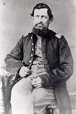

Captain Richard Welling Burt

Richard Welling Burt (April 23, 1823 – July 8, 1911) was a soldier of two wars and a poet of the American Civil War. Born in Warwick, Orange County, New York, he served as a private in the Third Ohio Infantry during the Mexican War, then edited the Progressive Age at Coshocton, Ohio. He enlisted December 3, 1861 in Company G, Seventy-sixth Ohio Infantry, rose to Captain of Company H, was wounded at the Battle of Resaca, marched with Sherman to the sea, and was mustered out July 15, 1865. His collected War Songs, Poems and Odes was published at Peoria, Illinois in 1906.
Explore the Letters & Poems
The pages below reproduce Captain Burt's Civil War letters and poetry, transcribed by Larry Stevens (original site © 1995–2000) and preserved from the Internet Archive.
Introduction & Camp Life
- Introduction (Biography)
- 76th Ohio Newspaper Recruiting Ad
- 1862 Letters to The Coshocton Age
- Surely A Fighting Regiment
- Return From Veteran Furlough
1862 — Donelson to Corinth
- Fort Donelson
- Fort Donelson Poem
- Corinth — May 10, 1862
- Strike For Liberty
- Memphis — June 3, 1862
- Mary Roy
- Missouri
1863 — The Vicksburg Campaign
- Arkansas Post
- Phil On Picket In Dixie
- Vicksburg — February 1863
- The Old Flag And Yankee Doodle
- Vicksburg — May 17, 1863
- Vicksburg — May 30, 1863
- Vicksburg — June 10, 1863
- Vicksburg — June 21, 1863
- Black River Bridge — July 30, 1863
1864 — The Atlanta Campaign
- Boys In Blue
- Kenesaw, Georgia
- Meditation On Atlanta Battlefield
- Battles For Atlanta — July 29, 1864
- Chasing General Hood
- Foraging For Sherman's Army
1864–1865 Diary Accounts
- 1864-1865 Diary Accounts (index)
- October 1864
- November 1864
- December 1864
- January 1865
- February 1865
- March 1865
- April 1865
- May 1865
1865 — March to the Sea & Victory
- General Logan And The Fifteenth Army Corps
- Wartime Printing of Logan And the 15th Army Corps
- Goldsboro, NC — March 27, 1865
- Gen. Sherman And His Boys In Blue
- Jeff. Davis In Petticoats
- The Dawn Of Peace
- Our Flag Is There
- Sherman's Farewell To His Boys In Blue
- Soldiers Homeward Bound
- Ringold
The Book & Memorials
- War Songs, Poems and Odes (1906) — the book
- War Songs Poems and Odes — photo
- Burt's GAR Photograph
- Burt's Obituary
Original site “The Civil War Letters and Poems of Richard W. Burt” © 1995–2000 Larry Stevens, Newark, Ohio. Preserved here from the Internet Archive Wayback Machine (snapshot May 14, 2008). See Sources for the complete archive list.